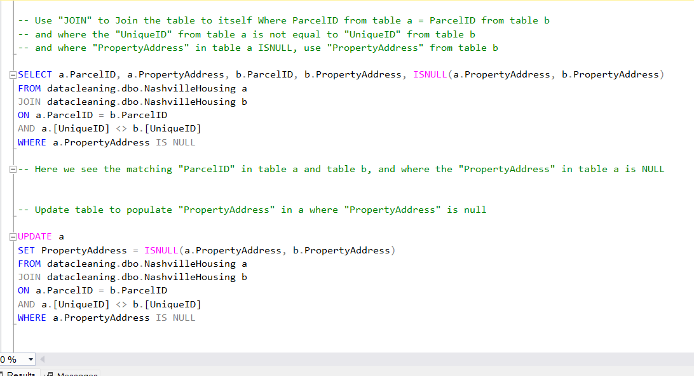
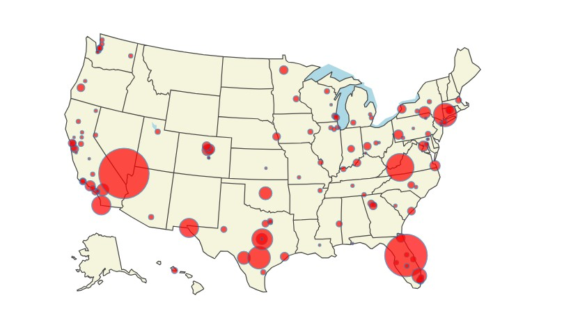

I created this portfolio to showcase my skills & abilities as a data analyst.
In this portfolio, you will find several projects using a variety of software & programming languages
to clean, visualize, & analyze large datasets.
About me:
I graduate in May 2024 with a MS in Data Science & Analytics, and have a BSc in Global Security & Intelligence Studies. I also have minor in Arabic & Middle Studies.
I love soccer, golf, and being outdoors. I enjoy having fun and new experiences!
I am a very driven, hardworking indivdual, and would relish the opportunity to work in the data science and analytics industry!
I hope you enjoy looking through some of my work!


This project uses python to perform analysis on a data set regarding important movie features such as budget, genre, star etc in order to determine what are the most important variables that correlate to a high profit in the movie industry.

This project investigates the issue of student mental health using R programming.
Using R, I cleaned the data and created several visualizations to analyze certain variables and their effect on student's mental health.

In this project, I used SQL to clean data regarding housing sales in Nashville.
This includes:
- Changing the format of data in a column
- Cleaning NULL values
- Parse data from one column into multiple new columns
- Remove duplicate values using a Common Table Expression (CTE)

In this project, I built a logistic regression model to predict survivors of the sinking of the Titanic using variables such as passenger class, Family size, gender, age, and fare price.

This project uses R programming to analyze and visualize data relating to US mass shooting cases to look into certain variables
and their correlation to mass shooting incidents.

In this project, I used Excel to clean and visualize data, and created interactive dashboards for effective data visualizations:
1 - Dashboard on Bike sales
2 - Dashboard on coffee sales